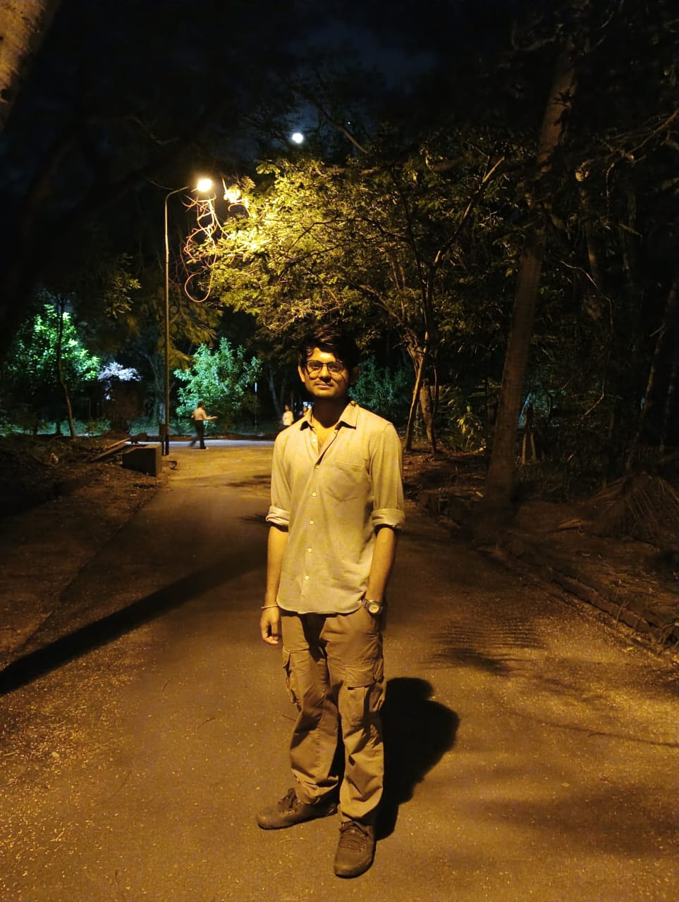

I am a Doctoral student of Computer Science at Ashoka University, supervised by Dr. Anirban Sen. Prior to joining the Department of Computer science at Ashoka, I was a Graduate student at Pondicherry Central University. I did my undergraduate studies at Ramakrishna Mission Vivekananda Centenary College. My research interest is in the field of Computational Social Science and Natural Language Processing. I did my schooling at Ramakrishna Mission Vidyapith, Purulia. My hobby is reading story books(short stories, historical fiction) and watching football matches(culé).
Computational Social Science, Natural Language Processing, Social Network Analysis
Large Language Models are capable of doing almost everything that we need in our day-to-day lives, yet they perform poorly when it comes to basic tasks such as sarcasm detection in code-mixed sentences. Comparatively a transformer-based language model such as DistilBERT performs quite well if it is fine-tuned on code-mixed sarcasm data in detection tasks.
Answer script evaluation is a very tedious job which is subject to various human biases. This project was aimed to develop an automated system based on NLP to predict score for answers to broad-answer-type questions.